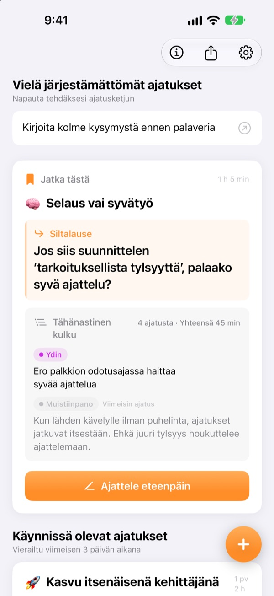
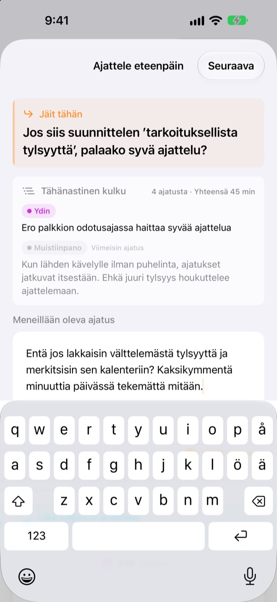
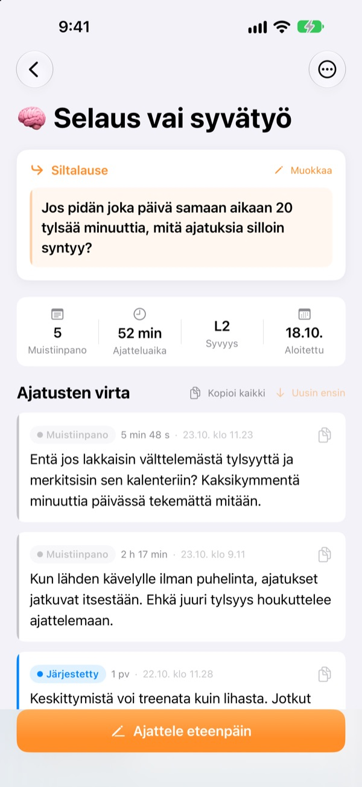
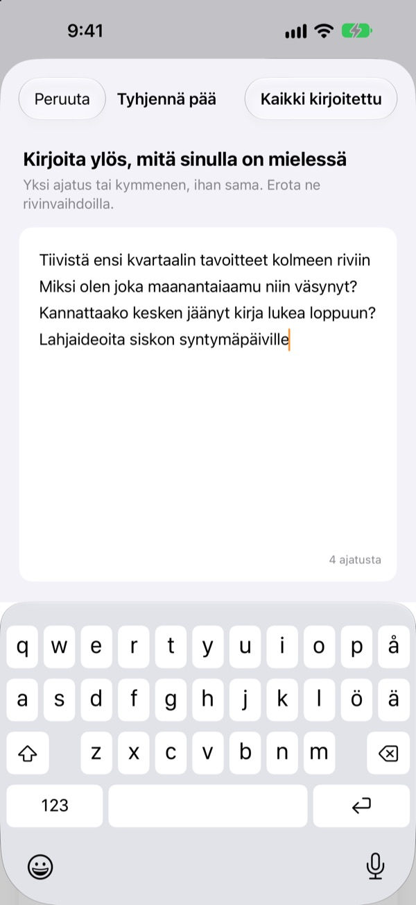

Eilen kesken jäänyt ajatus
jatkuu tänään samasta kohdasta
Kun lopetat ajattelun, jätä yksi rivi, josta jatkaa. Kun avaat sovelluksen seuraavan kerran, se odottaa ylimpänä.
Kaikki toiminnot ovat ilmaisia. Ei tiliä, kaikki pysyy laitteellasi.

Kokeile siltalausetta
Kirjoita ajatus ja jätä lause, josta jatkat ensi kerralla. Vaiheet ovat samat kuin sovelluksessa.
Mihin minä oikein jäin?
Avaat viime viikon muistiinpanon ja löydät pari johtopäätöstä, mutta et kysymystä, jota aioit pohtia seuraavaksi. Niinpä aloitat alusta. ThinkFlow pyytää kirjaamaan sen seuraavan kysymyksen, kun lopetat, joten palatessasi aloitat suoraan siitä.
Siltalause odottaa ylimpänä
Päätä ajattelukerta yhteen riviin: kysymykseen, josta jatkat. Palatessasi se lause, tähänastinen ydin ja viimeisin ajatus ovat samalla kortilla. Mitään ei tarvitse koota uudelleen.
Näet lauseen myös kotinäytön widgetissä, ja ajattelun aikana aika kulkee lukitusnäytöllä ja Dynamic Islandissa.

Muistiinpanosta ytimeen
Nosta jokaista ajatusta neljän tason läpi: muistiinpano, järjestetty, ydin ja tiivistelmä. Näet yhdellä silmäyksellä, kuinka kypsä se on.
Hakemasi tai kysymäsi liitetään aineistona, erilleen omista ajatuksistasi.

Tyhjennä pää ensin
Kirjoita ylös kaikki mielessä pyörivä, yksi rivi ajatusta kohden, ja valitse se, jota haluat työstää nyt. Siitä tulee ajatusketju, muut odottavat etusivulla, kunnes napautat niitä.
Ajatukset, joihin et ole koskenut yli kolmeen päivään, kerätään kohtaan Herätettävät ajatukset.

Aloita kolmella askeleella
- 1
Tyhjennä pää
Yksi rivi ajatusta kohden, sitten valitse se, jota kasvattaa.
- 2
Ajattele eteenpäin
Lisää jokainen uusi ajatus erikseen, niin sitä on helpompi hioa myöhemmin.
- 3
Jätä lause ja sulje
Seuraavalla kerralla aloitat siitä.
Hiontataso
- Muistiinpano
- Raaka ajatus
- Järjestetty
- Järjestetty kerran
- Ydin
- Vain ydin
- Tiivistelmä
- Lopullinen tiivistelmä
Vaihda taso napauttamalla ajatuksen vieressä olevaa merkkiä. Ydin ja tiivistelmät näkyvät kortilla ensimmäisinä, kun palaat.
Siltalause odottaa ylimpänä
Pitääkö siltalause kirjoittaa?
Jos lisäsit jotain, kyllä: Ajattele eteenpäin -näkymä sulkeutuu vasta, kun jätät seuraavan rivin. Jos et kirjoittanut mitään, voit vain sulkea sen. Juju on lopettaa, kun sanottavaa vielä on, eikä vasta jumiin jäädessä.
Mitä ovat Herätettävät ajatukset?
Ketjut, joita et ole avannut yli kolmeen päivään, kerätään etusivulla omaan osioonsa, joten lähes unohtunutkin ajatus voi jatkua siltalauseestaan.
Miten ilmoitan virheestä tai ehdotan jotain?
Käytä sovelluksen asetusten Lähetä palautetta -kohtaa, kirjoita alla olevaan osoitteeseen tai avaa issue osoitteessa github.com/M1zz/ThinkFlow/issues. Kaikki viestit ovat tervetulleita.
Onko kaikki todella ilmaista?
Kyllä. Kaikki toiminnot ovat ilmaisia, ilman mainoksia ja ilman tiliä. Asetusten ”Tue kehittäjää” on täysin vapaaehtoinen eikä avaa mitään lisää.
Kysyttävää tai palautetta? Kirjoita osoitteeseen leeo@kakao.com.